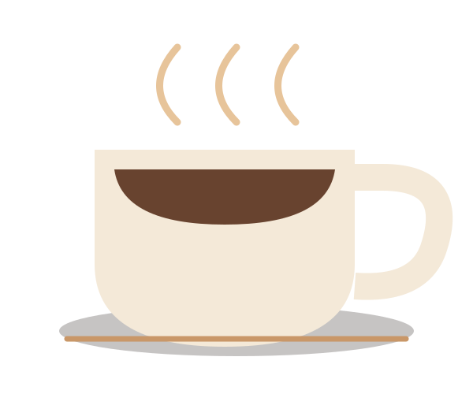

Origem cuidadosa
Selecionamos cafés de produtores que valorizam a qualidade e o cultivo responsável.
Nossa história →Grãos selecionados, aroma inesquecível e o cuidado de quem respeita cada etapa do café.
Conheça nossos cafésAcreditamos que uma boa xícara começa muito antes da água quente: nasce na terra, cresce com cuidado e chega até você com história.
Selecionamos cafés de produtores que valorizam a qualidade e o cultivo responsável.
Nossa história →Respeitamos o perfil de cada grão para revelar aromas, sabores e personalidade.
Ver produtos →Da seleção à embalagem, cada detalhe é pensado para tornar seu café especial.
Fale com a gente →Conheça nossa seleção de grãos, cafés moídos e acessórios para preparar bons momentos.
Explorar produtos